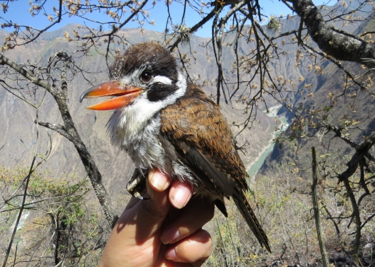

Zonas Importantes del Río Mantaro

Lugares Turísticos
Visita los destinos turísticos más importantes alrededor del río.

Flora del Valle del Mantaro
Explora la biodiversidad vegetal del valle, rica en especies endémicas.

Fauna del Río Mantaro
Descubre la vida silvestre que habita en las cercanías del río.

Caudal en Tiempo Real
Simulación del caudal del río Mantaro actualizado en tiempo real.